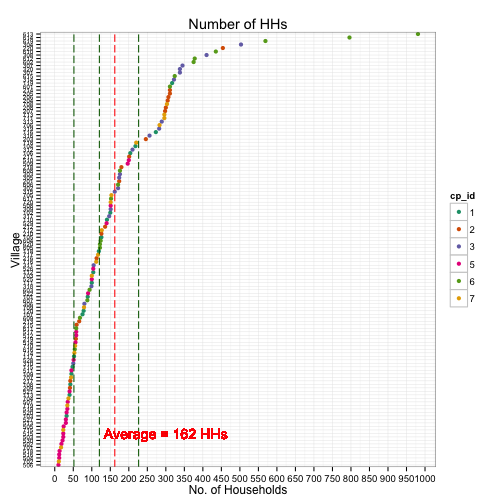

title : subtitle : author : job : framework : io2012 # {io2012, html5slides, shower, dzslides, ...} highlighter : highlight.js # {highlight.js, prettify, highlight} hitheme : tomorrow # widgets : [] # {mathjax, quiz, bootstrap} mode : selfcontained # {standalone, draft}

--- .class #id